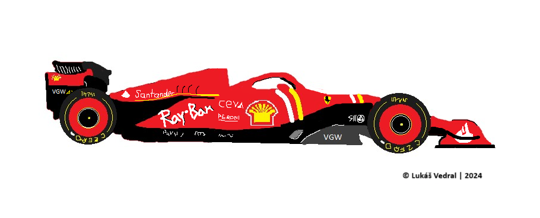

Co je to F1?
Formule 1, zkráceně F1, je série závodů formulí,
založena v roce 1950, kdy nahradila Grand Prix automobilů.
Je označována za královskou disciplínu automobilového sportu
pro takzvané monoposty. Spadá pod Mezinárodní automobilovou
federaci (FIA), která je nejvyšší organizační složkou.
Historie
První automobilové závody byly pořádány ve Francii v 80. letech 19. století.
Těch se zúčastňovaly automobily poháněné benzínem, parou i elektřinou.
Na přelomu století se již začaly automobily v soutěžích rozdělovat do kategorií
podle hmotnosti. První Velkou cenu uspořádal v roce 1906 francouzský autoklub
Grand Prix l'ACF. V tom roce době platilo jediné omezení: Vůz nesmí mít hmotnost
vyšší než 1000 kg.
Do první světové války se pak konaly ještě tři Velké ceny.
Hned v prvních poválečných letech byla ustanovena Formule A,
která se stala základem poválečných závodů Grand Prix, jež prozatím neměly
status mistrovství. Několik závodů bylo zorganizováno již v období před druhou
světovou válkou. Myšlenka uspořádat mistrovství světa spatřila světlo světa v roce 1947.
Hned následující rok byla Formule A přejmenována na Formuli 1,
přispěl k tomu i fakt, že vznikla nižší série Formule 2. Grand Prix automobilů
se tento rok poprvé a naposledy jela také v Československu.
V počátečních letech byla organizována celá řada Grand Prix, které se do
mistrovství světa nezapočítávaly. Během 57 ročníků (1950–2006) se
uskutečnilo 768 Grand Prix, po skončení ročníku 2017 jejich počet vzroste
na 976 – k nim je nutné přidat dalších 368 závodů nezapočítávaných do
klasifikace mistrovství světa v období 1946–1983. Počínaje rokem 1984
jsou všechny uskutečněné závody F1 součástí mistrovství světa Formule 1.
Sezóna 2023
Minulá sezóna byla 74. v pořadí, účastnilo se 20 jezdců v 10 týmech.
Těmito týmy byl Red Bull, Alpha Tauri, Scuderia Ferrari, Alfa Romeo,
Haas, Mercedes, McLaren, Aston Martin, Williams a Apline.
Během sezóny se v týmu AlphaTauri byl vyměněn nizozemský jezdec Nyck de Vriese
australanem Danielem Riccardem, ten si během jednoho tréninku
zlomil ruku a byl později nahrazen Liamem Lawsonem.
Z dvaceti dvou
závodů vyhrál Max Verstappen pro tým RedBull devatenáct z nich. Dvakrát potom zvítězil
Sergio Peréz, také pro RedBull. Patnáctý závod v sezóně vyhrál jezdec
pro Ferrari, Carlos Sainz Jr.
Vozy F1
Moderní formule jezdící v F1 se velmi liší od starších modelů
ale zároveň i od modelů v nižsích úrovních motorsportu, jako je F2 a níže.
Motor mají uložený uprostřed.
Současným motorem F1 je šestiválec o objemu 1,6 litru, vybavený turbem a hybridními motorgenerátory.
Ačkoli se nostalgici vysmívají jeho "malému" zdvihovému objemu, jedná se o nejsilnější motor,
který se účastní závodů Grand prix. Za téměř 70 let však motory Formule 1 výrazně pokročily.
Skořepina celého monopostu je konstruována z kompozitu uhlíkových vláken, aby se docílilo
nejnižší hmotnosti a bylo možné vůz vyvažovat posouváním těžiště a vyvažovacích závaží.
Celková hmotnost vozu, a to i s pilotem a palivem, nesmí být po závodě méně než 620 kg.
Tyto vozy jsou schopny projíždět zatáčky ve vysokých rychlostech a to díky aerodynamickému přítlaku.
Ten funguje na principu obráceného křídla, které používají letadla, aby mohla létat. Na přelomu
šedesátých a sedmdesátých let se poprvé na vozech objevila křídla s obráceným efektem než u letadla.
Tím se obrátí i síla, která tlačí letadlo do vzduchu a bude přitlačovat auto k zemi. Vzduch proudící
pod křídlem musí být rychlejší než ten, který proudí nad křídlem. Aby se toho docílilo, musí být křídlo
zkonstruováno tak, aby spodní část křídla tvořila větší vzdálenost než ta horní.

Sociální sítě
> Oficiální stránky
> Oficiální instagram
> Oficiální twitter
Seznam závodů
Tento rok se uskuteční celkem 24 Grand Prix, začínaje 2.3. v Bahrainu.
> Kalendář všech závodů